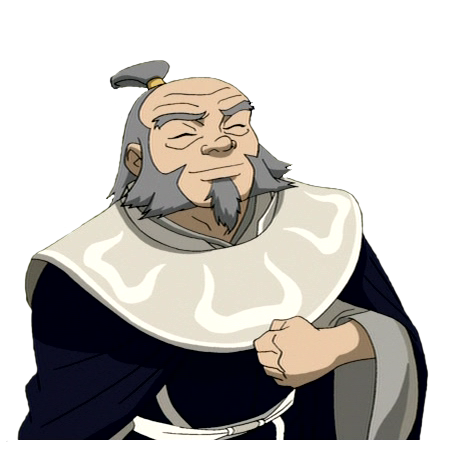

Uncle Iroh

Uncle
Iroh is a fictional character from the animated television series "Avatar: The Last Airbender." Iroh is a fire nation general,
but unlike other fire nation members he was a wise, kind-hearted, and spiritual man. Iroh becomes a mentor to the main characters in the show.
Known for his deep wisdom, love of tea and insights, he provided as a source of guidance to the younger characters like his nephew Zuko.